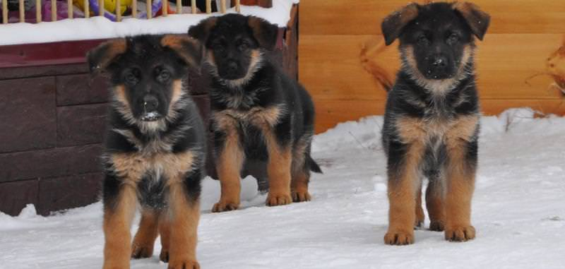

Щенки немецкой овчарки имеют ряд отличий от всех остальных пород как во внешности, так и в характере, интеллекте. Начиная разговор о щенках немецкой овчарки, следует понимать, что речь пойдет об уникальном существе, идеально подходящем для жизни рядом с человеком. Немецкая овчарка максимально похожа внешне на дикого, лесного волка: та же сила, грация, неустрашимость и способность жить в самых неблагоприятных условиях. Но в отличие от волка, психика собаки построена на служении хозяину. Нет более работящей породы, чем немецкая овчарка, радовать своей работой хозяина — цель ее жизни. Услышать одобрение из уст любимого человека для овчарки лучше, чем любое лакомство. При выборе питомца, останавливая свой взгляд на немецкой овчарке, человек должен понимать: преданнее существа в его жизни уже не будет, и отвечать на это надо любовью и заботой.
Немецкой овчарки имеют ряд отличий от всех остальных пород как во внешности, так и в характере, интеллекте. Начиная разговор о щенках немецкой овчарки, следует понимать, что речь пойдет об уникальном существе, идеально подходящем для жизни рядом с человеком. Немецкая овчарка максимально похожа внешне на дикого, лесного волка: та же сила, грация, неустрашимость и способность жить в самых неблагоприятных условиях. Но в отличие от волка, психика собаки построена на служении хозяину. Нет более работящей породы, чем немецкая овчарка, радовать своей работой хозяина — цель ее жизни. Услышать одобрение из уст любимого человека для овчарки лучше, чем любое лакомство. При выборе питомца, останавливая свой взгляд на немецкой овчарке, человек должен понимать: преданнее существа в его жизни уже не будет, и отвечать на это надо любовью и заботой.Итак, выбранный щенок не должен иметь белых пятен на шерсти или слишком светлых подпалин. Костяк должен быть крепким, хвост как сабля, уверенные движения. Щенок должен быть любознательным, игривым, это говорит о его здоровье. А чем любопытнее животное, тем он умнее.
Вам осталось лишь одно - приобрести их:
Их стоимость вы можете увидеть в этой таблице
| Имя собаки | Стоимость собаки | Валюта |
|---|---|---|
| Потап Потапович | 2500 | грн |
| Иван Грозный | 2400 | грн |
| Бешенная львица | 2300 | грн |
| Жанна Дарк | 2600 | грн |
| Темная жрица | 2700 | грн |
| Формула воды | Формула Спирта | Формула математическая |
|---|---|---|
| H2O | C2H5OH | (a+b)2=a2+2ab+b2 |